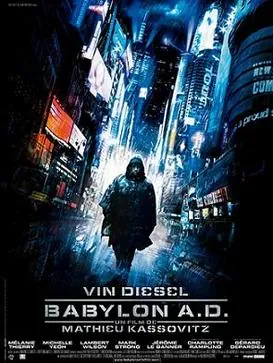

The genetics
Aurora is a designed human. Her creator, Dr. Darquandier, built her to carry humanity's knowledge and abilities from birth, according to the German Wikipedia summary as a step in human evolution, implanting a computer in her brain while she was a fetus; the Noelites, a wealthy religious movement, commissioned her so that she would conceive without sex and give them a manufactured messiah. She was "designed to breed", not to live, and her death after childbirth was programmed in advance. The film presents the scientist as a sympathetic father who wants to protect his creation and dies for it, while the High Priestess uses biotechnology for power and money. The engineering is vague and mixed with cybernetics and mysticism; the Moria review finds the ending muddled.
How genetics is portrayed
- Overall portrayal of genetics
- negative Human design serves a cynical religious corporation that manufactures a messiah, and the creation is built to die after breeding; the sympathetic creator does not offset this.
- Outcome of the genetic intervention
- negative The designed Aurora is hunted by armed factions, people die protecting her, and she dies after giving birth as programmed, though her twins survive in Toorop's care.
- Dr. Arthur Darquandier
- ambivalent Aim: curiosity, personal (neutral). Darquandier designed Aurora to advance human evolution and, under contract to the Noelites, to conceive a virgin birth; he later revives Toorop to protect her and dies for her, but his design includes her programmed death.
- The Noelites (High Priestess)
- villain Aim: ideological, power, commercial (negative). The sect commissioned Aurora as a messiah for a staged virgin birth; its High Priestess, driven by power and money, pursues her with missiles and kills Darquandier.
The story
In a near future of war-torn slums outside a fortified United States, the mercenary Toorop is hired by the Russian gangster Gorsky to smuggle a young woman, Aurora, from a convent of the Noelite sect in Central Asia to New York, in exchange for money and a new identity. Aurora travels with her guardian, Sister Rebeka. On the way she speaks languages she never learned, foresees attacks and takes command of a submarine. In New York, Aurora reveals that she is pregnant with twins although she is a virgin. In a battle with Gorsky's men and the Noelites, Rebeka is killed and Aurora shoots Toorop so that a missile tracking him misses. He is revived by Dr. Arthur Darquandier, Aurora's father, who explains that the Noelites commissioned her as a messiah for a staged virgin birth. The Noelite High Priestess kills Darquandier; Aurora dies after giving birth, and Toorop raises the twins.